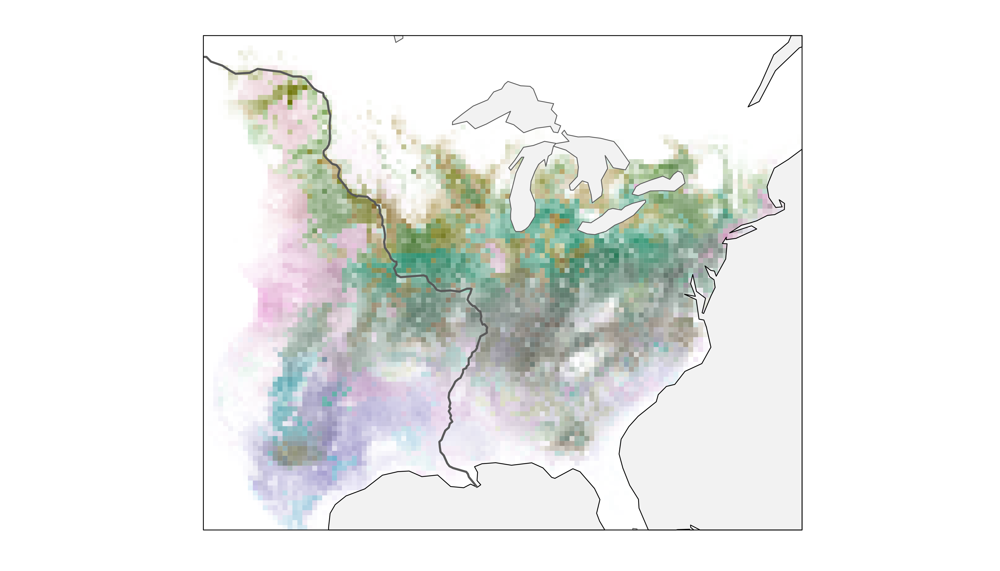
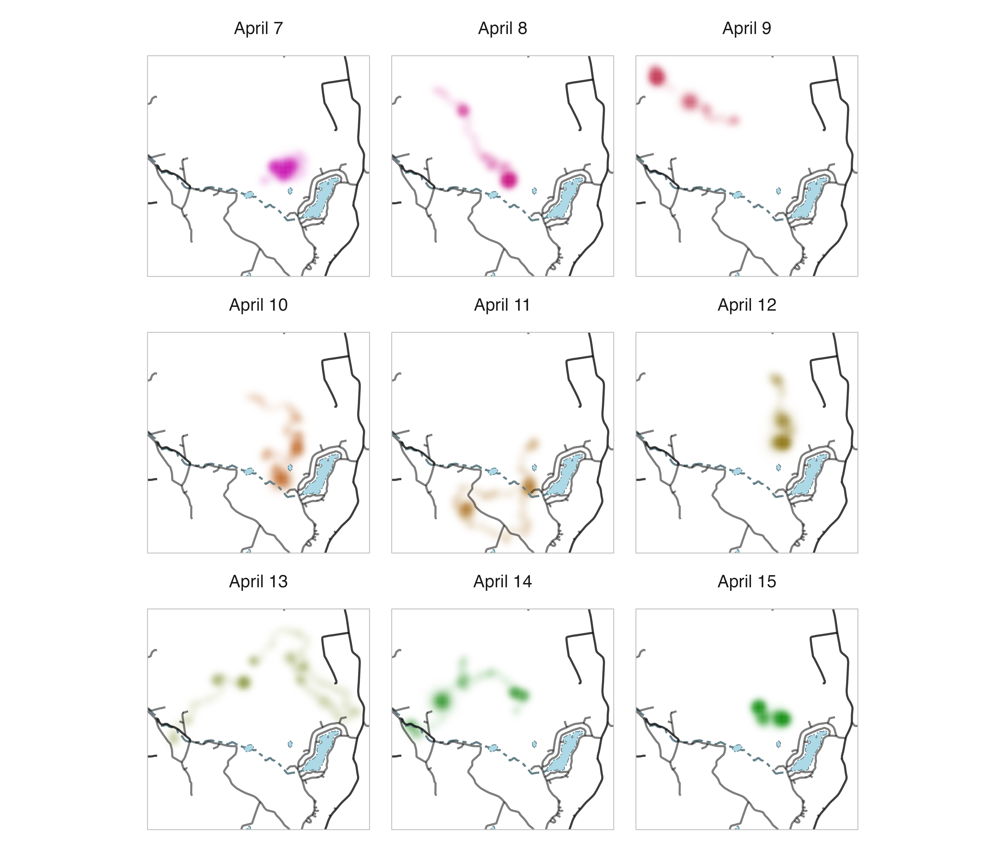
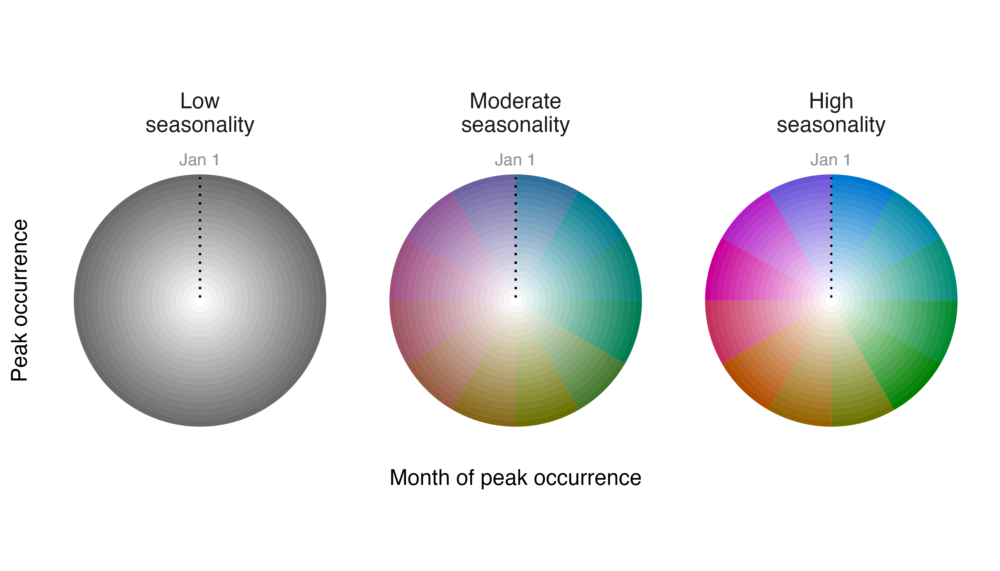
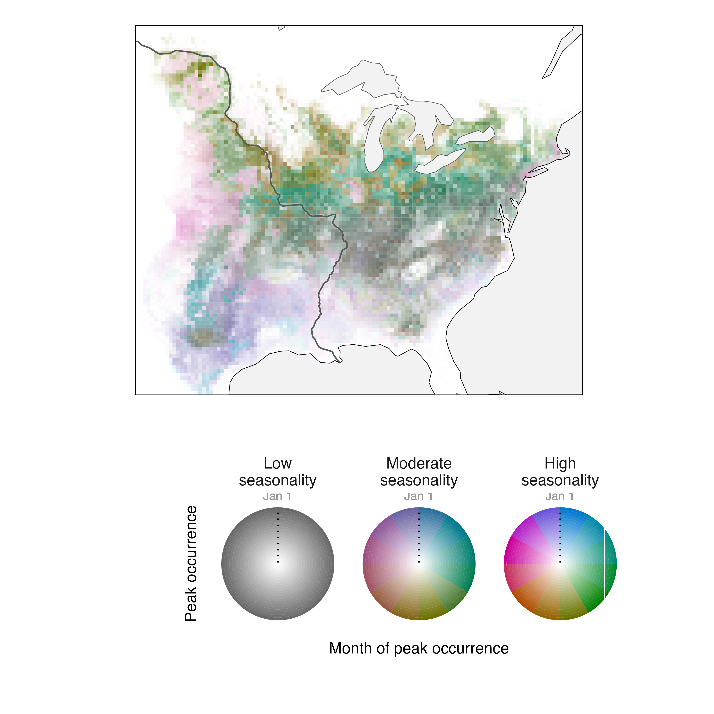
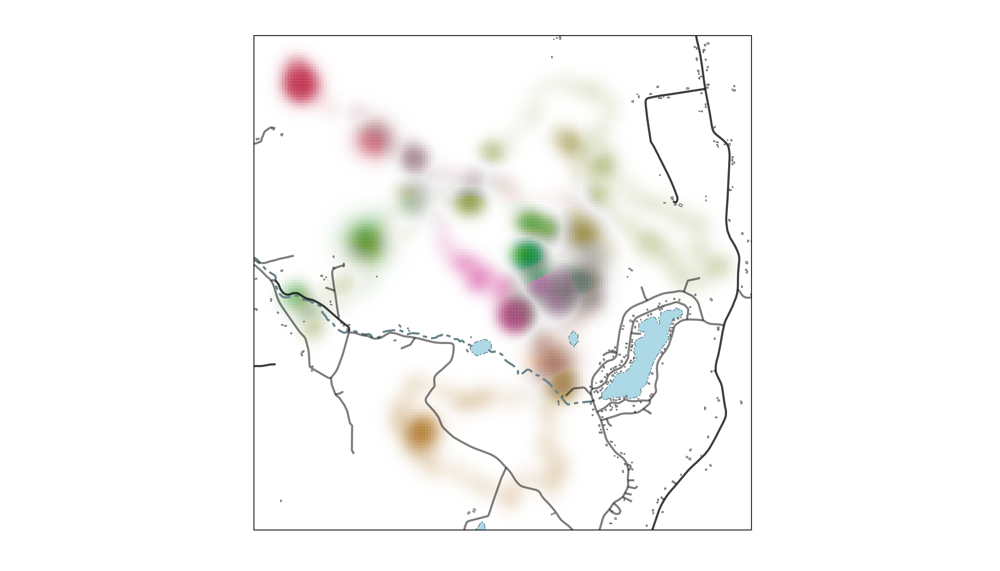
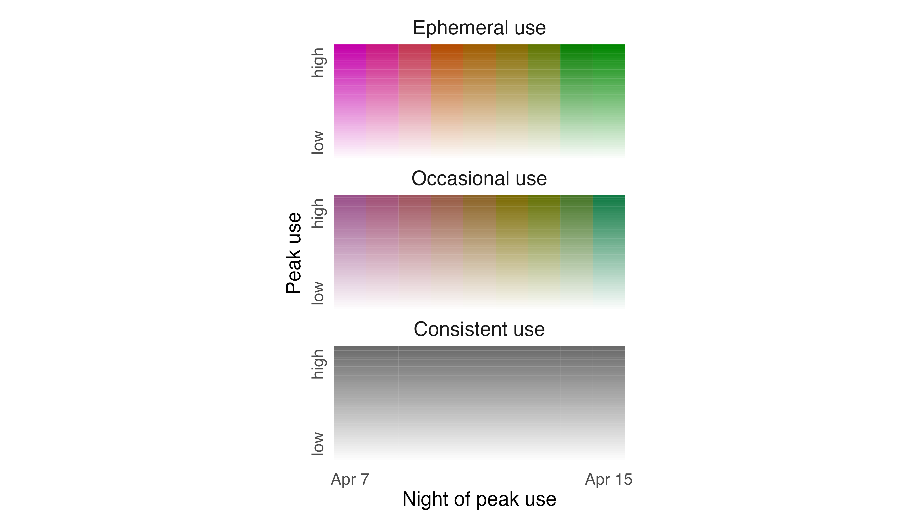
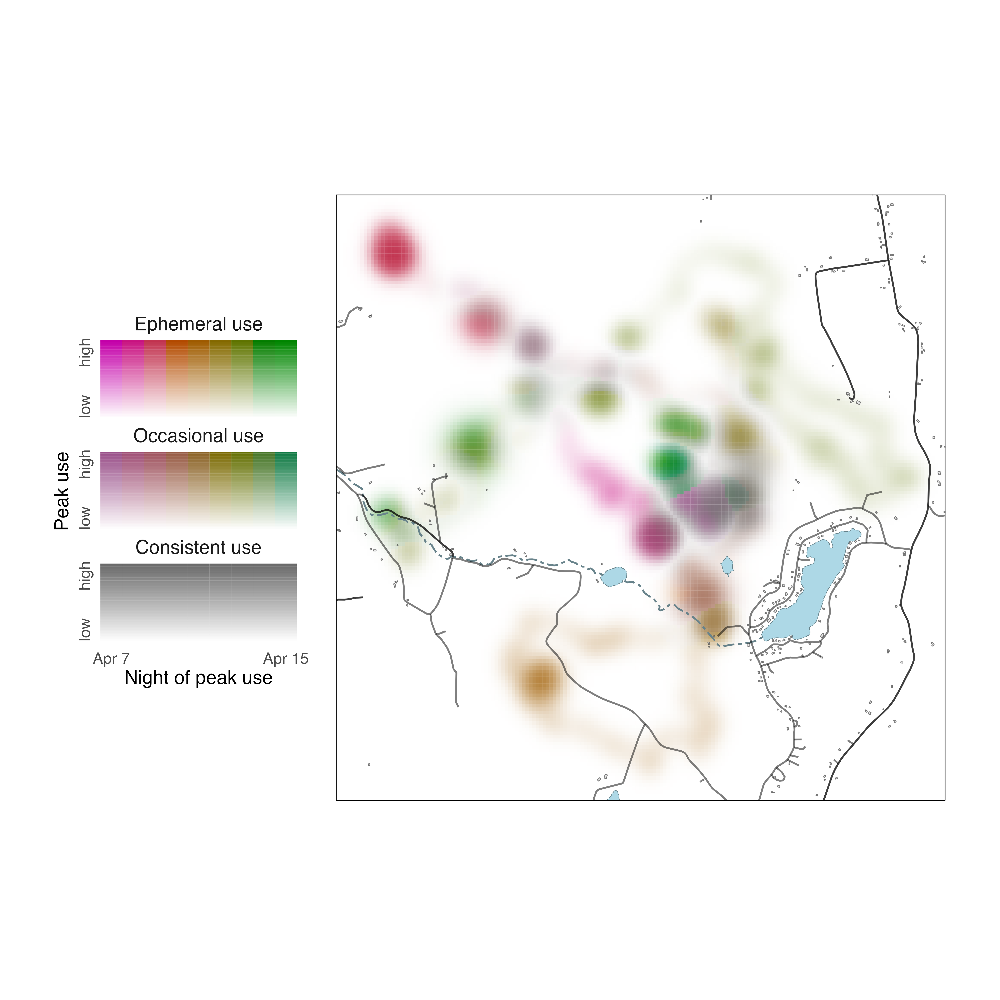
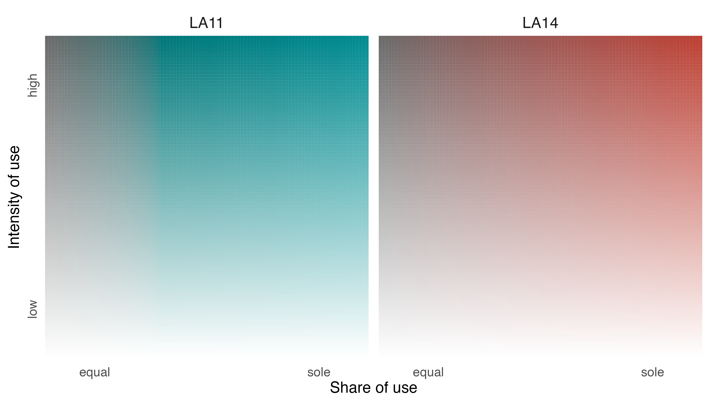
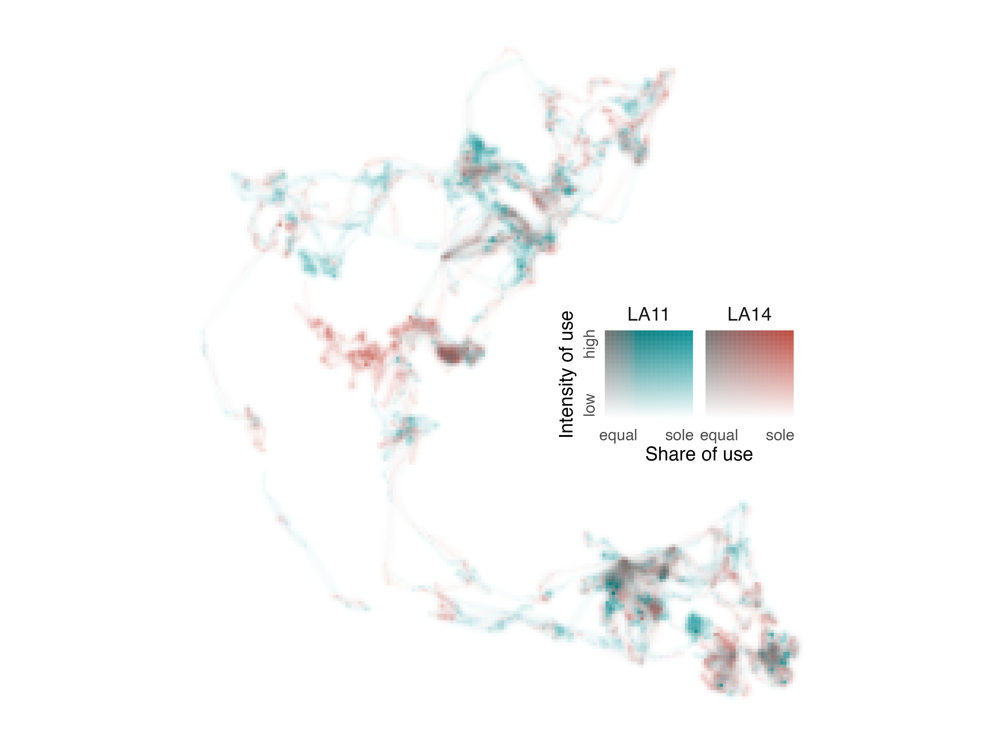
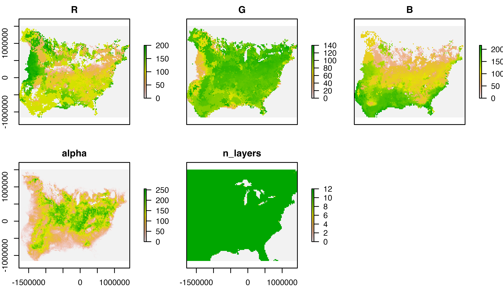

In the Introduction to colorist and Tuning visualizations in colorist vignettes, we provided an overview of colorist functionality and explored how users might adjust visualizations to address specific narrative goals. Here, we focus on several issues that users may confront when making finished visualizations:
- Adding context to
coloristmaps using supplementary spatial data - Modifying
coloristlegends - Displaying
coloristmaps in other R spatial packages and external GIS software
We start by loading the necessary libraries.
library(colorist)
library(ggplot2)
library(raster)
library(rnaturalearth)
library(sf)
library(tigris)1. Adding context
It’s easy to imagine users wanting to add context to visualizations generated by colorist, to help explain the causes of particular spatiotemporal distributions. Here, we focus on showing how Natural Earth and US Census TIGER/Line data can be accessed from within R and incorporated into colorist maps.
rnaturalearth package
Natural Earth is a public domain data set that contains vector and raster data developed for display at several different map scales. Files describing physical and cultural geographies can be accessed through R using functions in the rnaturalearth package. Here, we download Natural Earth vector data and add it to a map describing the spatiotemporal distribution of Field Sparrow, a small bird that occurs in the eastern United States. We begin by calculating distribution metrics for Field Sparrow with metrics_distill(), choosing a palette with palette_timecycle(), and creating a map with map_single(). Note that we choose to save the ggplot2 map as an object.
# calculate metrics, choose a palette, make a map
m_fiespa <- metrics_distill(fiespa_occ)
p_fiespa <- palette_timecycle(fiespa_occ)
map_fiespa <- map_single(m_fiespa, p_fiespa)Then, we use the ne_download() function from rnaturalearth to download country, river, and lake spatial data as sf (simple features) objects, which are easy to incorporate into our existing map. In the process, we project and crop each data set to the same projection and extent as our Field Sparrow data. To avoid annoying topology and projection issues, we create our own ocean polygon by calculating the difference between a polygon describing the extent of the Field Sparrow map and the polygon describing countries.
# download, transform, and crop spatial data
countries <- ne_download(category = "cultural", type = "countries",
returnclass = "sf", scale = 110) %>%
st_transform(crs = st_crs(fiespa_occ)) %>%
st_crop(st_bbox(fiespa_occ))
rivers <- ne_download(category = "physical", type = "rivers_lake_centerlines",
returnclass = "sf", scale = 110) %>%
st_transform(crs = st_crs(fiespa_occ)) %>%
st_crop(st_bbox(fiespa_occ))
lakes <- ne_download(category = "physical", type = "lakes", returnclass = "sf",
scale = 110) %>%
st_transform(crs = st_crs(fiespa_occ)) %>%
st_crop(st_bbox(fiespa_occ))
# create polygon describing ocean
ocean <- st_as_sfc(st_bbox(fiespa_occ)) %>%
st_difference(st_union(countries))We add the supplementary spatial data to the map by appending geom_sf() elements to the underlying map and symbolizing each element according to our specifications. We also add a bounding rectangle to our map.
# add supplementary spatial data to map
map_fiespa_ne <- map_fiespa +
geom_sf(data = ocean, fill = "gray95", color = "black", size = 0.25) +
geom_sf(data = rivers, size = 0.25, color = "gray35") +
geom_sf(data = lakes, fill = "gray95", size = 0.25, color = "gray35") +
geom_sf(data = st_as_sfc(st_bbox(fiespa_occ)), fill = NA, color = "black",
size = 0.25)
# show the map
print(map_fiespa_ne)
Now, we have a clearer perspective on the spatiotemporal distribution of Field Sparrow in relation to a variety of easily recognizable geographic features in North America.
tigris package
Next, we integrate spatial data from the tigris package into a map describing Fisher use of a territory in upstate New York over the course of nine nights. The tigris package enables download of TIGER/Line data generated by the United States Census Bureau. Files detail a wide array of geographic features, area delineations, and place names throughout the United States.
In contrast to the previous example, we start by using the metrics_pull(), palette_timeline(), and map_multiples() functions to visualize individual raster layers from the Fisher data set. We adjust lambda_i within map_multiples() to emphasize areas that were used only briefly by the Fisher.
# calculate metrics, choose a palette, make a series of maps
m_fisher <- metrics_pull(fisher_ud)
p_fisher <- palette_timeline(9, start_hue = -40)
map_fisher <- map_multiples(m_fisher, p_fisher, lambda_i = -5,
labels = paste("April", 7:15))To download spatial data using tigris we need to know that the Fisher study area is located in Rensselaer County, New York. Then, we can access linear water features, areal water features, and roads for the county using tigris functions, projecting and cropping our supplementary spatial data along the way. tigris functions provide data formatted as sf objects.
# download, transform, and crop spatial data
streams <- linear_water("NY", "Rensselaer") %>%
st_transform(crs = st_crs(fisher_ud)) %>%
st_crop(st_bbox(fisher_ud))
ponds <- area_water("NY", "Rensselaer") %>%
st_transform(crs = st_crs(fisher_ud)) %>%
st_crop(st_bbox(fisher_ud))
roads <- roads("NY", "Rensselaer") %>%
st_transform(crs = st_crs(fisher_ud)) %>%
st_crop(st_bbox(fisher_ud))As in the previous example, we add our spatial data to the underlying colorist map using geom_sf() elements and we add an unobtrusive bounding box to more clearly define the facets of our plot.
# add supplementary spatial data to the series of maps
map_fisher +
geom_sf(data = streams, linetype = 6, color = "lightblue4", size = 0.25) +
geom_sf(data = ponds, linetype = 6, color = "lightblue4", fill = "lightblue",
size = 0.25) +
geom_sf(data = roads, size = 0.25, color = alpha("black", 0.5)) +
geom_sf(data = st_as_sfc(st_bbox(fisher_ud)), fill = NA, color = "gray",
size = 0.25)
Now we can clearly see how the Fisher moved throughout its territory across nights and in relation to the locations of roads, streams, and ponds.
General comments
We recommend trying to keep a “light touch” with edits to colorist maps to ensure that information about spatiotemporal distributions remains the focus. In addition, it’s important to keep in mind that colorist visualizations rely on differences in cell opacity to communicate information about differences in intensity; changing the plot background color from white will make the map difficult to interpret.
2. Modifying legends
The legend functions in colorist generate ggplot2 plot objects, some of which are fairly complicated. Here, we focus on modifying legends to aid interpretation and combining legends and maps within a ggplot2 framework.
legend_timecyle()
When we make a legend for the Field Sparrow annual cycle map described above, the default settings do not communicate the meanings of intensity, specificity, or layer very clearly.
# create a legend using default settings
legend_timecycle(p_fiespa)Remember, we have distilled distribution metrics from a stack of monthly occurrence probabilities, so intensity values represent maximum occurrence throughout the year, specificity values indicate the degree of seasonality in occurrences, and layer values reveal the month of maximum occurrence. We can edit the legend to clarify these interpretations by making several changes in the legend_timecycle() function.
# change labels on legend
l_fiespa <- legend_timecycle(p_fiespa,
origin_label = "Jan 1",
# specificity labels
label_s = c("Low\nseasonality",
"Moderate\nseasonality",
"High\nseasonality"),
# intensity label
label_i = "Peak occurrence",
# layers label
label_l = "Month of peak occurrence")
# show legend
print(l_fiespa)
Better.
Now, we need to decide where to position the legend in relation to the map describing the spatiotemporal distribution of Field Sparrow. After playing with several ideas, we place the legend beneath the main map. This requires expanding the spatial extent of the plot using the coord_sf() function and then inserting the legend into the “empty landscape” using annotation_custom(). Note that the values in coord_sf() and annotation_custom() are in projected map coordinates.
# position legend below map
map_fiespa_ne +
coord_sf(ylim = c(-3153281, 1405830)) +
annotation_custom(ggplotGrob(l_fiespa),
xmin = -1482551, xmax = 1850606,
ymin = -3153281, ymax = -1453281)
legend_timeline()
The strategy for editing details of legend_timeline() plots is similar to that for legend_timecycle() plots, despite differences in their layouts. Before changing the legend, however, we should use metrics_distill() and map_single() to describe Fisher use of its territory over nine nights in a single map. Because we’re making one larger map, we’re also going to add another layer of spatial data describing building footprints in the area. These features come from the OpenStreeMap Microsoft Building Footprint dataset, a cropped and projected copy of which is available on the GitHub repository for this package.
# calculate distribution metrics
m_fisher_distill <- metrics_distill(fisher_ud)
# download building footprints
f_buildings <- file.path(tempdir(), "buildings.rds")
download.file(paste0("https://github.com/mstrimas/colorist/raw/master/",
"data-raw/buildings.rds"),
f_buildings)
buildings <- readRDS(f_buildings)
unlink(f_buildings)
# make a map
map_fisher_distill <- map_single(m_fisher_distill, p_fisher,
lambda_i = -5, lambda_s = 10) +
geom_sf(data = streams, linetype = 6, color = "lightblue4", size = 0.25) +
geom_sf(data = ponds, linetype = 6, color = "lightblue4", fill = "lightblue",
size = 0.25) +
geom_sf(data = roads, size = 0.25, color = alpha("black", 0.5)) +
geom_sf(data = buildings, size = 0.25, color = alpha("black", 0.5)) +
geom_sf(data = st_as_sfc(st_bbox(fisher_ud)), fill = NA, color = "black",
size = 0.25)
# show the map
print(map_fisher_distill)
Setting lambda_i = -5 makes rarely used parts of the landscape more conspicuous and setting lambda_s = 10 emphasizes differences in how consistently areas were used across nights. Spatial data for Rensselaer County are added to the map using geom_sf() elements, just as in the previous section.
Now, let us generate a default legend for our Fisher data using legend_timeline().
# create a legend using default settings
legend_timeline(p_fisher)To make the legend more helpful as a guide to interpreting the spatiotemporal distribution of the Fisher, we need to edit intensity, specificity, and layer labels. So, we modify label_s, label_i, and label_l in legend_timeline() to reflect their meanings with respect to the Fisher data. We also prescribe how the ends of the timeline are labeled using thetime_labels argument.
# change labels of legend
l_fisher <- legend_timeline(p_fisher,
time_labels = c("Apr 7", "Apr 15"),
# intensity label
label_i = "Peak use",
# layer label
label_l = "Night of peak use",
# specificity labels
label_s = c("Consistent use", "Occasional use", "Ephemeral use"))
# show legend
print(l_fisher)
To place our legend next to the map, we expand the extent of our plot by modifying coord_sf() and we specify its position using the annotation_custom() function.
# position legend to the left of the map
map_fisher_distill +
coord_sf(xlim = c(-4300, 2150)) +
annotation_custom(ggplotGrob(l_fisher),
xmin = -4400, xmax = -2500,
ymin = 5100266, ymax = 5104666) 
legend_set()
Here, we return to data describing the utilization distributions of two African Elephants in Etosha National Park in 2011. The two layers of the RasterStack form an unordered set of distributions, one for each individual. To visualize how the elephants partitioned space, we begin by calculating distribution metrics using metrics_distill(), creating a palette with palette_set(), and generating a map with map_single(). We add visual emphasis to rarely used areas via the lambda_i argument.
# calculate metrics, choose a palette, make a series of maps
m_elephants <- metrics_distill(elephant_ud)
p_elephants <- palette_set(elephant_ud)
map_elephants <- map_single(m_elephants, p_elephants, lambda_i = -5)This should all seem familiar.
Next, we build a legend using our palette and the default settings in legend_set().
# create a legend using default settings
legend_set(p_elephants)The legend is meant to tell us how the two individuals partitioned space in Etosha National Park over the course of a year, allowing viewers to understand locations that were used predominantly by one individual, or the other, and locations that were used equally by both individuals.
To help communicate this information more clearly, we should make some adjustments to the legend. We can label the two facets with individual identifiers using the group_labels argument in legend_set() and we can modifylabel_i,label_s, and axis_s values to orient viewers.
# change labels of legend
l_elephants <- legend_set(p_elephants,
group_labels = names(elephant_ud),
# intensity label
label_i = "Intensity of use",
# specificity label
label_s = "Share of use",
# specificty axis
axis_s = c("equal", "sole"))
# show legend
print(l_elephants)
Now, we have a legend that further reveals the narrative of space use by LA11 and LA14 in 2011 and we can position it within the map using annotation_custom().
# position legend within map
map_elephants +
annotation_custom(ggplotGrob(l_elephants),
xmin = -3000, xmax = 37000,
ymin = -2347500, ymax = -2305000)
3. Displaying colorist maps in other software
colorist uses ggplot2 to construct visualizations because it is an incredibly flexible visualization tool that enables maps and legends to be amended and adjusted in many different ways. However, some users may want to employ other tools for visualizing colorist outputs, because of their greater familiarity with those tools or because of specific features that are not available in colorist or ggplot2.
Many of the R packages that enable plotting of spatial data (and most external GIS software) rely on RGBa descriptions of color and opacity instead of the hexadecimal-alpha descriptions used in colorist functions. To accommodate display of colorist maps in these other tools, the map_single() function can be used to return a RasterStack object containing layers of red, green, blue, and alpha information. Users can then visualize those data in a variety of other tools.
raster package
The raster package is a workhorse for handling and analyzing gridded spatial data in R. Here, we return to our Field Sparrow data, but instead of accepting the default colorist map output, we specify return_type = "stack" in the map_single() function. This change directs map_single() to return an RGBa stack instead of a ggplot2 plot object.
# ask for map as a raster stack
s_fiesp <- map_single(m_fiespa, p_fiespa, return_type = "stack")
# show stack information
s_fiesp
#> class : RasterStack
#> dimensions : 193, 225, 43425, 5 (nrow, ncol, ncell, nlayers)
#> resolution : 14814.03, 14814.04 (x, y)
#> extent : -1482551, 1850606, -1453281, 1405830 (xmin, xmax, ymin, ymax)
#> crs : +proj=laea +lat_0=38.7476367322638 +lon_0=-90.2379515912106 +x_0=0 +y_0=0 +datum=WGS84 +units=m +no_defs +ellps=WGS84 +towgs84=0,0,0
#> names : R, G, B, alpha, n_layers
#> min values : 0, 0, 0, 0, 0
#> max values : 200, 140, 216, 255, 12With a RasterStack describing our map in RGBa values, we can now opt to visualize the data using plot functions available in the raster package. The standard raster::plot() function illustrates each layer of the RasterStack in a standard color palette. In addition to the R, G, B, and alpha layers, note the last layer (i.e., n_layers) which describes, in every cell, the number of layers in the original fiespa_occ data set containing non-NA occurrence values.
# plot layers using raster plot function
plot(s_fiesp)
To reconstruct our colorist map with the appropriate color scheme, we visualize the stack using raster::plotRGB(), which requires specification of R, G, and B layers. It also requires specification of alpha values as a vector. If all has gone well, the resulting plot should look the same as the ggplot2 plot generated within colorist.
# plot r, g, b, and alpha layers to reconstruct colorist map
plotRGB(s_fiesp, 1, 2, 3, alpha = as.vector(s_fiesp[["alpha"]]))
You can then add supplementary spatial data to your raster using other plot functions within raster and related packages.
QGIS
There are situations in which you may want to use external GIS software instead of R to create a refined cartographic visualization of colorist output. Here, we show how to recreate colorist maps in QGIS, a powerful and free GIS.
Here, we reuse metrics and palette information that we have already generated for two African Elephants to create a map. Instead of accepting the default settings in the map_single() function, however, we specify return_type = "stack" and save the output as a RasterStack.
# ask for map as a RasterStack object
s_elephants <- map_single(m_elephants, p_elephants, lambda_i = -5,
return_type = "stack")
# save RasterStack to R working directory
writeRaster(s_elephants, "elephants_rgba.grd")Then, we drag the resulting file into an empty QGIS workspace to begin the visualization process.

The default symbology assigned to the multiband raster by QGIS makes it appear as if our map were created using a box of pastels. To correct the appearance of the map colors, double-click on the elephant_rgba layer to open Layer Properties and ensure that data are being rendered in multiband color, RGB bands are in the correct order, and min and max values for all three bands are 0 and 255, respectively. In addition, be sure that band 4 (i.e., alpha) is specified as the transparency band in the Transparency tab of Layer Properties.

After clicking Apply, the thumbnail at the base of the layer properties interface should correctly reproduce the map we were able to generate in R. Click OK. Avoid making further changes to the symbology of elephant_rgba, otherwise map colors will not match those generated in the colorist palette and the map will become difficult to interpret. Now, users can add and symbolize spatial data using sophisticated cartographic tools available within QGIS.